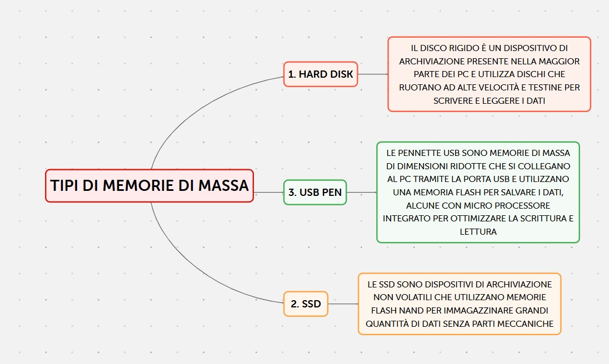
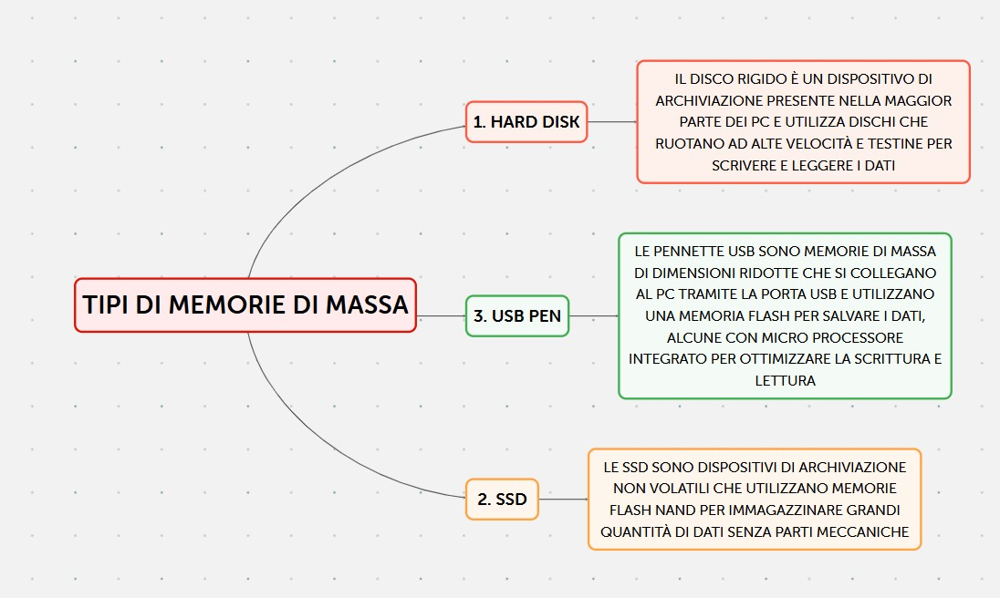

Memoria di massa
Una memoria di massa è un tipo di memoria che permette di immagazzinare grandi quantità di dati (file – audio – video – app) in modo permanente, è quindi a discrezione dell'utente l'eliminazione o meno dei suddetti dati.
Esistono vari tipi di memorie di massa:
- HARD DISK (disco rigido): è un dispositivo di archiviazione presente nella maggior parte dei pc e che è formato da dei dischi che ruotano ad alte velocità e da delle testine che sono poste a pochi nanometri dai dischi e che hanno il compito di scrivere o leggere i dati.
- SSD (solid state disk): A differenza dei supporti di tipo magnetico come nel caso del disco rigido a testina, una SSD ha la possibilità di memorizzare in maniera non volatile grandi quantità di dati, senza l'utilizzo di organi meccanici tramite l'uso delle memorie flash NAND.

 
TORNA INDIETRO

TORNA INDIETRO